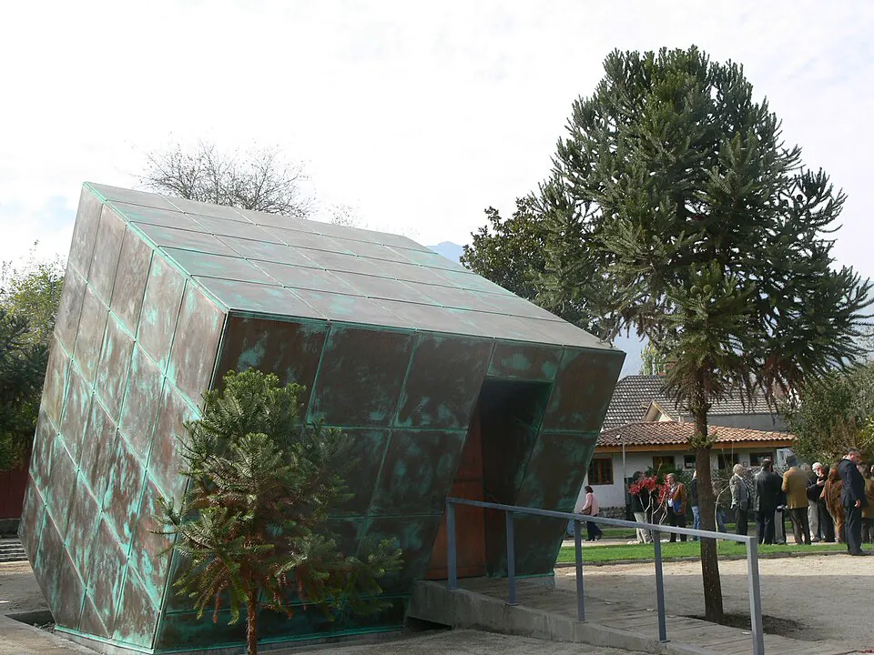

Violaciones a los derechos humanos

Entre 1973 y 1990, agentes del Estado cometieron graves y sistemáticas violaciones a los derechos humanos: ejecuciones, desapariciones forzadas, tortura, prisión política, relegación y exilio. Estos hechos fueron establecidos por informes oficiales del Estado de Chile. La Comisión Nacional de Verdad y Reconciliación (Informe Rettig, 1991) calificó 2.279 casos de personas muertas o desaparecidas, la gran mayoría por acción de agentes del Estado; calificaciones posteriores elevaron el total a más de 3.000 víctimas. La Comisión Nacional sobre Prisión Política y Tortura (Informe Valech, 2004, y su segunda etapa, 2011) reconoció en total a más de 38.000 personas que sufrieron prisión política y tortura, y concluyó que estas prácticas fueron una política de Estado. Los principales organismos represivos fueron la DINA y luego la CNI, que operaron centros de detención como Villa Grimaldi, en Santiago, hoy sitio de memoria. Frente a la represión, diversas iglesias y la comunidad judía crearon el Comité Pro Paz, y luego la Iglesia católica fundó la Vicaría de la Solidaridad, mientras las agrupaciones de familiares mantuvieron la búsqueda de los detenidos desaparecidos. Durante la dictadura, el régimen negó o justificó estos hechos; desde 1990, los tribunales han condenado a numerosos responsables, aunque muchas familias siguen exigiendo verdad y justicia.
Versión para niños
Los derechos humanos son derechos que tienen todas las personas, como vivir en paz, pensar distinto y ser tratadas con respeto. Durante la dictadura, entre 1973 y 1990, esos derechos no fueron respetados. Muchas personas fueron detenidas injustamente por sus ideas, otras tuvieron que irse del país y algunas murieron o desaparecieron. Muchas familias siguen buscando verdad y justicia. Hoy, Chile recuerda a esas personas en lugares de memoria, para que esto nunca más vuelva a ocurrir.
Para maestros
Nivel sugerido: 2° medio
Objetivo: Comprender qué son los derechos humanos y conocer, a partir de los informes oficiales del Estado, las violaciones cometidas durante la dictadura, valorando la memoria y la convivencia democrática.
Preguntas para la clase:
- ¿Qué son los derechos humanos y por qué el Estado tiene el deber de protegerlos?
- ¿Qué aportaron los informes Rettig y Valech al conocimiento de la verdad?
- ¿Por qué es importante que existan sitios de memoria?
Actividad (20–30 min): Antes de la clase, el docente informa a los apoderados sobre el tema y prepara un ambiente de respeto: algunas familias pueden haber sido afectadas directamente y otras tener memorias distintas, por lo que no se pide a nadie relatar experiencias familiares ni se juzga a los estudiantes por las opiniones de sus familias. Se trabaja con fuentes oficiales y se evitan imágenes explícitas. En grupos, los estudiantes analizan un extracto de las conclusiones del Informe Rettig o del Informe Valech y responden qué hechos establece y qué recomendaciones hace. El curso cierra con una reflexión sobre el "nunca más" y el docente ofrece el apoyo del equipo de convivencia escolar a quien lo necesite.
Fuentes sugeridas: Museo de la Memoria y los Derechos Humanos; Informe de la Comisión Nacional de Verdad y Reconciliación; Informe de la Comisión Nacional sobre Prisión Política y Tortura; Instituto Nacional de Derechos Humanos (INDH).
Objetivos de Aprendizaje (Currículum Nacional)
- 6° básico · HI06 OA 08 Comparar diferentes visiones sobre el quiebre de la democracia en Chile, el régimen o dictadura militar y el proceso de recuperación de la democracia
- 2° medio · HI2M OA 16 Explicar que durante la dictadura militar se suprimió el Estado de derecho y se violaron sistemáticamente los derechos humanos
- 2° medio · HI2M OA 22 Analizar el concepto de derechos humanos, considerando características como su universalidad, indivisibilidad, interdependencia e imprescriptibilidad
- 3° medio (Educación Ciudadana) · FG-ECIU-3M-OAC-05 Promover el reconocimiento, la defensa y exigibilidad de los derechos humanos en la vida cotidiana
Personajes
Revisión humana pendiente. Cómo se revisa · Reportar un error
Cómo citar: Historia de Chile. (2026). Violaciones a los derechos humanos. En Historia de Chile: atlas y línea de tiempo. https://moises-salgado.github.io/historia-de-chile/momento/violaciones-a-los-derechos-humanos.html